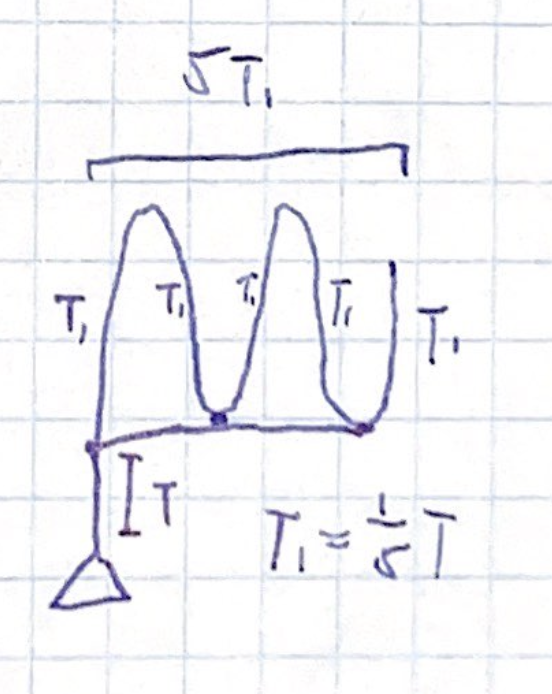
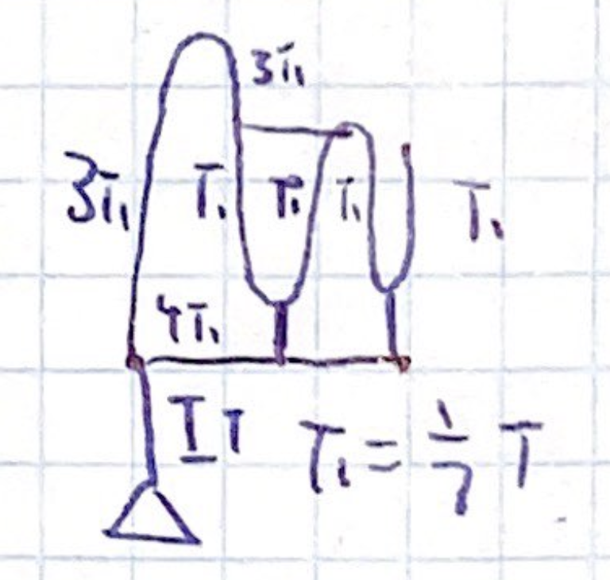
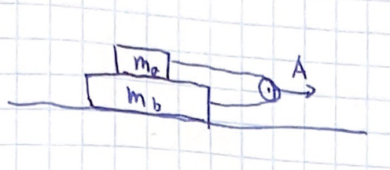

Backlinks
1 Pulley Problem
1.1 Number 1
Three tie points, tied onto one point.
\begin{align} &3T_1 = T\\ \Rightarrow &T_1 = \frac{1}{3}T \end{align}
1.2 Number 2
Three tie points, tied onto one point. The extra additional pull, given its not tied, simply transfers tension.
\begin{align} &3T_1 = T\\ \Rightarrow &T_1 = \frac{1}{3}T \end{align}
1.3 Number 3
Five points, tied onto one point.
\begin{align} &5T_1 = T\\ \Rightarrow &T_1 = \frac{1}{5}T \end{align}
1.4 Number 4
Two tie points on one, which is added to another set of tie points. The higher (smaller) set has a total tension of \(3T_1\), which is tied again onto the bottom tie point.
\begin{align} &9T_1 = T\\ \Rightarrow &T_1 = \frac{1}{9}T \end{align}
1.5 Number 5
The top tie point has \(3T_1\) of tension. The bottom has \(2T_1\), and they are finally all added together.
\begin{align} &3T_1 + 2T_1 = T\\ \Rightarrow &T_1 = \frac{1}{5}T \end{align}
1.6 Number 6
The top tie point has \(3T_1\) of tensions, and the bottom has four tie points and tied together towards the bottom.
\begin{align} &3T_1 + 4T_1 = T\\ \Rightarrow &T_1 = \frac{1}{7}T \end{align}
1.7 Number 7
The top tie point has \(2T_1\) of ties, the bottom has \(3T_1\), which is finally tied to another propagated to another \(6T_1\) tie point. In total, therefore:
\begin{align} &2T_1 + 3T_1 + 6T_1 = T\\ \Rightarrow &T_1 = \frac{1}{11}T \end{align}
2 Sliding Blocks

Given the masses \(M_a\), \(M_b\), \(F_f\) between them, and \(A\) the acceleration of the pully pulling them, we are to figure the tension \(T\) on the rope.
We will first draw free-body diagrams of each of the objects, like so:


We will note that, given \(M_b > M_a\), \(M_a\) will slide to the "right" (+x) direction. As such, in the reference frame of \(M_a\), the force of friction is in the opposite direction as \(T\), whereas this is the opposite case for \(M_b\).
According to these free-body diagrams, then, we can conclude that:
\begin{equation} \begin{cases} M_a a_a = T- F_f \\ M_b a_b = T+ F_f \end{cases} \end{equation}As we have three unknowns and two expressions, we have one remaining degree of freedom to address. This can be analysed by looking at the rope connecting \(M_a\) and \(M_b\).
We will define the position of \(M_a\) as \(x_a\), \(M_b\) as \(x_b\), and finally the position of the pulley as \(x_p\). We will further introduce a temporary constant value \(L\) representing the length of the perfect rope connecting the two blocks.
We can, therefore, claim that:
\begin{equation} (x_p - x_a) + (x_p-x_b) = L \end{equation}That the two distances from block to pulley added up is the length of the rope.
Performing slight algebraic simplifications:
\begin{align} &(x_p-x_a)+(x_p-x_b) = L \\ \Rightarrow & 2x_p-(x_a+x_b) = L \\ \Rightarrow & 2x_p = L +(x_a+x_b)\\ \Rightarrow & x_p = \frac{L +(x_a+x_b)}{2} \end{align}We can now take two derivatives w.r.t. time:
\begin{equation} \frac{d^2x_p }{d{t^2}} = \frac{\ddot{x_a}+\ddot{x_b}}{2} \end{equation}And, therefore:
\begin{equation} A = \frac{{a_a}+{a_b}}{2} \end{equation}We now have three unknowns and three equations, which therefore allows for solving:
\begin{equation} \begin{cases} M_a a_a = T- F_f \\ M_b a_b = T+ F_f\\ A = \frac{{a_a}+{a_b}}{2} \end{cases} \end{equation}Solving for the equations above symbolically, we arrive at the following expressions:
\begin{equation} \left[a_{a} = \frac{2 \, {\left(A M_{b} - F_{f}\right)}}{M_{a} + M_{b}}, a_{b} = \frac{2 \, {\left(A M_{a} + F_{f}\right)}}{M_{a} + M_{b}}, T = \frac{{\left(2 \, A M_{b} - F_{f}\right)} M_{a} + F_{f} M_{b}}{M_{a} + M_{b}}\right] \end{equation}The value for tension, therefore, is the last expression highlighted above.